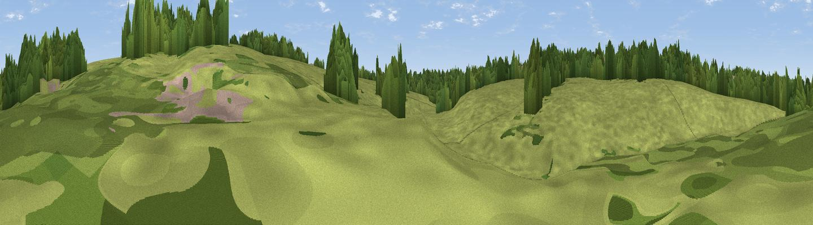

Viewpoint near Easton
#46236 in England · top 100% of its area beats it · near Easton · footpathWhere it is
The exact computed spot (SK 92739 26707). Click the marker for map links.
Public access: a public right of way passes within 13 m of this spot. Computed from Natural England's CRoW access layer and OpenStreetMap rights of way — not the legal definitive map. Always verify locally.
The view, rendered

A 360° render of this exact spot computed from the terrain model, tree cover and land cover — summer colours, afternoon light, calibrated against photographs of famous viewpoints. Real trees, hedges and buildings will differ in detail.
The panorama
Grey silhouette: terrain skyline in each direction (720 bearings, Earth curvature and refraction included). Dashed green: skyline with trees (+15 m) and buildings (+8 m) as obstacles. Blue strip: how far the ground is visible on each bearing.
Where the view opens
Wedge length = distance to the farthest visible ground on that bearing (vegetation-aware). Rings at 10, 25 and 50 km.
What fills the view
73% grassland · 21% woodland · 5% cropland · 2% built-up
Angular shares of the visible panorama (visual magnitude), not map area. Landscape diversity 0.33 (0–1 Shannon).
Key numbers
More beautiful places nearby
The staircase of upgrades: each row has a higher view potential than everything closer. Driving times are estimates from straight-line distance, calibrated against real road routing — check an actual route before setting out.
| Place | Direction | Drive | Score |
|---|---|---|---|
| Viewpoint near Colsterworth | SSE · 3 km | ~7 min | 12.1 |
| Buckminster Hill | SW · 6 km | ~12 min | 19.7 |
| Viewpoint near Denton | NW · 8 km | ~16 min | 21.3 |
| Hall's Hill | N · 9 km | ~17 min | 26.4 |
| Viewpoint near Grantham | N · 9 km | ~18 min | 39.0 |
| Viewpoint near Barrowby | NNW · 11 km | ~21 min | 53.5 |
| Viewpoint near Great Gonerby | NNW · 12 km | ~23 min | 59.8 |
| Viewpoint near Belvoir | NW · 13 km | ~24 min | 70.8 |
52.82991, -0.62496 · source: osm viewpoint · position refined by local search. Computed location — check access rights before visiting.